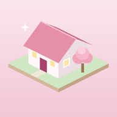

Городок знаний
Личная игра. Войди тем же аккаунтом, что и в Money.
Почта
Пароль
Войти
Забыла пароль
Проверяю доступ…
Это личная игра.
Вход открыт только для владелицы.
Войти другим аккаунтом
Не загрузилось подключение к облаку.
Проверь интернет и попробуй ещё раз.
Обновить
Катя
Уровень 1
Энергия
100
Настроение
70
Вдохновение ×1,5 опыта
08:00
День 1
★
20
Нажми на дом, чтобы дойти до него
+
−
Карта
Навыки
Задания
Значки